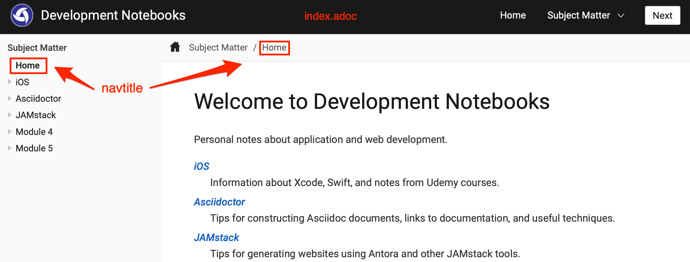

Override title shown in the TOC
There are times when you want to display an alternate title in the TOC, without changing the title of the document itself. Suppose that your start page is index.adoc, and the document title is "Welcome to Development Notebooks".
You want the TOC to display "Home" instead of the "Index" or "Welcome to Development Notebooks".

Using navtitle to display an alternate navigation title
-
To do this, set a
navtitleattribute to your alternate title:index.adoc= Welcome to Development Notebooks :navtitle: Home -
Change the nav file entry so that it does not specify a title. Since a
navtitleis set in the topic, "Home" is substituted in the TOC instead of the name of the file or the document’s title.nav.adoc* xref:index.adoc[]